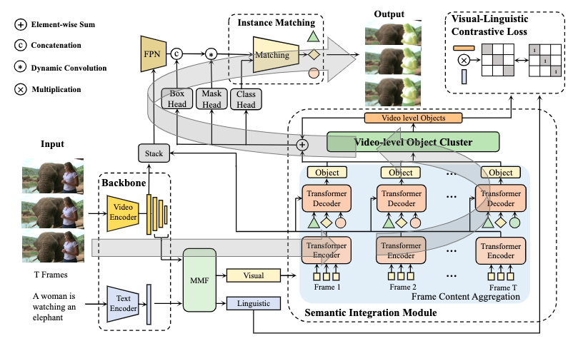
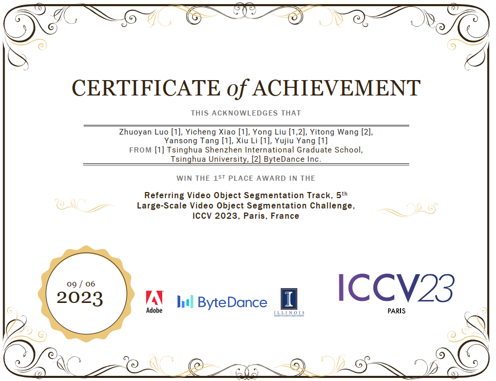
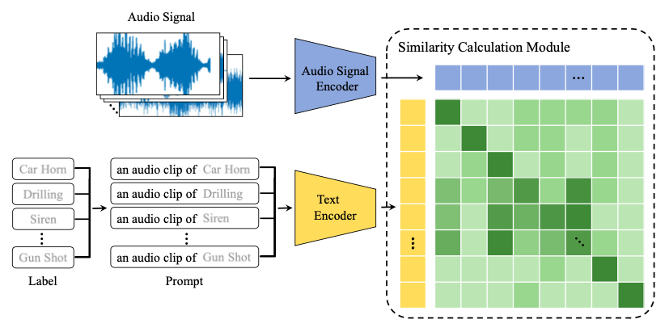

|
Yicheng Xiao |


About MeI am a year-1 master student at Tsinghua University, under the supervision of Prof. Xiu Li. I obtained my B.Eng in Mathematics and Applied Mathematics at Xidian University in 2023. My research interest includes Multi-Modal Learning and Computer Vison. |
News[2023.09]The paper SOC is accepted by NeurIPS 2023 (CCF-A) [2023.09]The first prize of The 5th Large-scale Video Object Segmentation Challenge Track3: Referring Video Object Segmentation [2023.03]The paper SemanticAC is accepted by ICASSP 2023 (CCF-B) [2021.12]Obtain National Scholarship |
|
2023-Present Studying as a Master student at Tsinghua University |
|
|
2019-2023 Studying as an undergraduate student at Xidian University |
|
2022.12-2023.3 I am a multimodal algorithm research intern at OPPO Research Institute |
|  |
SOC: Semantic-Assisted Object Cluster for Referring Video Object SegmentationZhuoyan Luo*, Yicheng Xiao*, Yong Liu*, Shuyan Li, Yitong Wang, Yansong Tang, Xiu Li, Yujiu Yang (* equal contribution) NeurIPS 2023 (CCF-A) / paper |
|  |
The First Prize of ICCV 2023 The 5th Large-scale Video Object Segmentation Challenge Track3: Referring Video Object SegmentationZhuoyan Luo*, Yicheng Xiao*, Yong Liu*‡, Yitong Wang, Yansong Tang, Xiu Li, Yujiu Yang.(*equal contribution, ‡Project lead) ICCV Workshop 2023 |
|  |
SEMANTICAC: SEMANTICS-ASSISTED FRAMEWORK FOR AUDIO CLASSIFICATIONYicheng Xiao*, Yue Ma*, Shuyan Li, Hantao Zhou, Ran Liao, Xiu Li (* equal contribution) ICASSP 2023 (CCF-B) / paper |
|
Thanks Jon Barron for this template. |